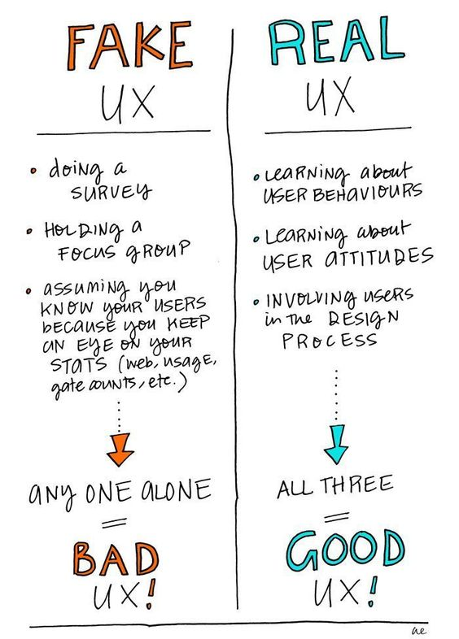
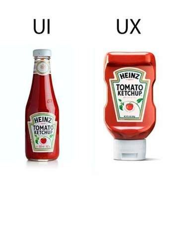

How I Work
Empathize and Research:
The journey begins by deeply understanding your users and their needs. Through research, surveys, and interviews, I gather insights to empathize with their pain points and aspirations. This informs the foundation of the design strategy..
Define and Ideate:
Translating user insights into actionable goals, I work on defining the project's scope and objectives. This step involves brainstorming sessions and collaborative discussions to generate innovative ideas and concepts that align with the project's vision.
Create User Personas:
Crafting user personas helps us crystallize our understanding of the target audience. By profiling their demographics, behavior, and goals, we create relatable user archetypes that guide design decisions throughout the process.
Information Architecture:
Organizing content and interactions is crucial for a seamless user experience. I'll create a logical information architecture that outlines the flow and hierarchy of the app or website, ensuring users find what they need effortlessly.
Prototyping and Testing:
Translating ideas into tangible experiences, I'll design interactive prototypes. These clickable models allow us to test usability and gather feedback before committing to full development, minimizing potential setbacks.

Design, Refine, and Iterate:
With validated prototypes, I'll meticulously craft visually engaging interfaces that marry aesthetics with user-centered functionality. This includes refining layouts, colors, typography, and imagery. Iterative feedback loops ensure the design evolves harmoniously.
User Testing and Validation:
Rigorous user testing is conducted to validate design choices. This step uncovers any usability issues and validates that the design resonates with the target audience. Adjustments are made based on real-world user feedback.
Continuous Learning and Improvement:
The design journey is ongoing. Regularly analyzing user behavior and industry trends, I'll proactively suggest improvements and refinements to ensure the product remains fresh, relevant, and competitive.